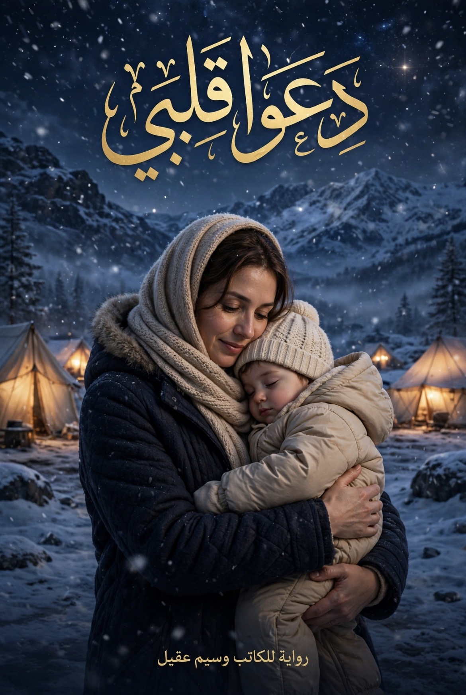

رواية للكاتب وسيم عقيل
هذه القصة ليست خيالاً. هي قصة واقعية، واحدة من آلاف القصص التي حدثت وتحدث في زمن الحرب. ما نقرأه هنا حدث فعلاً، بألمٍ يشبهه وأسماءٍ غيّرها الكاتب حفاظاً على الخصوصية وستراً لأصحابها. غيرتُ الأسماء والأماكن الدقيقة، لكنني لم أغير الوجع. نهلة ليست اسماً واحداً. نهلة هي الوجه الحقيقي للمرأة السورية المعنفة، هي أختي وأختك، هي جارتنا التي صمتت طويلاً. هي كل امرأة قيل لها "اسكتي" فصرخت بقلبها. أعتذر سلفاً من أي شخص قد يشعر أن هذه القصة تمسه أو تمثل جزءاً من حكايته. التشابه هنا غير مقصود، لكنه ليس صدفة. إن تشابهت القصص، فهذا لأن الظلم واحد، ولأن المعاناة تكرر نفسها. أردتُ من خلال هذه الرواية تسليط الضوء على معاناة حدثت ولا تزال تحدث للنساء الشرقيات عموماً، ولبنات محافظتي - درعا - خصوصاً، اللواتي دفعن ثمن الحرب مرتين، مرةً بالتهجير ومرةً بالعادات. هذه الرواية ليست ضد الرجل، بل ضد فكرة أن يتحول الأخ إلى قاضٍ وجلاد، وضد أن يكون الشرف سكيناً على رقبة المرأة وحدها. الإهداء: إلى كل نساء العالم. إلى كل نهلة هربت حافية لتحمي طفلها. إلى كل لينا مدت يدها لأختٍ لا تعرفها. إلى كل أم قالت: دعوا قلبي. وسيم عقيل
ريف درعا. ليس الريف الذي يظهر في الأخبار، بل ريفٌ من حجرٍ أبيض وترابٍ أحمر، بيوتٌ متلاصقة كأنها تخاف أن تبقى وحدها، وحكايا الناس تنتقل من شباكٍ إلى شباك أسرع من الريح. نهلة بنت التسعة وعشرين عاماً، متزوجة منذ سبع سنوات من ناصر. ناصر ليس رجلاً سيئاً بالمعنى الذي يُحكى عنه. هو ابن عمها، تربى على أن الرجل لا يقول "أحبك"، الرجل لا يتغزل ولا يضحك بصوت مرتفع ولا يظهر حبه لأنثاه فهذا كله عيب ..الرجل يوفر المسكن يوفر الخبز، والغاز، وأجرة الطبيب لحمادة. كان يظن أن هذا هو الحب كله. يستيقظ في الخامسة فجراً ليذهب إلى عمله سائق جرار في الأراضي الزراعية، يعود عند الغياب ، وجهه مليء بالغبار، يغسل يديه، يأكل ما وضعته نهلة، ثم يجلس أمام هاتف صغير يشاهد فيديوهات حتى ينام. لم يضربها يوماً. وهذه كانت حجته الدائمة وحجة أهلها: "ما بيضربك، شو بدك أحسن من هيك؟" لكن نهلة كانت تموت من شيء لا يُرى. أمها، أم محمود، امرأة من جيلٍ علم بناته أن الزواج سترة. وان الرجل في البيت مهما كانت صفاته يبقى افضل من عدم وجوده ..كانت تأتي كل خميس، تنظر إلى البيت المرتب، إلى حمادة النظيف، وتقول: "الله يرضى عليكي، ساترة بيتك". ومبيضه وجهنا ولم تسألها مرة: هل أنتِ سعيدة يا نهلة؟ أخوها محمود، الأخ الأكبر، كان هو القانون في العائلة بعد وفاة أبيها. كلمته هي الحكم. هو من قرر زواجها من ناصر، لأنه "ابن عم وبيستر". هو من كان يردد: "المرا ما إلها إلا بيت جوزها". وكان حمادة، ذو العامين، هو عالمها كله. طفل بعيون عسلية واسعة، لا يفارقها. كانت تحمله على ظهرها وهي تعجن، وتغني له بصوتٍ خافت أغاني فيروز القديمة التي كانت تحبها قبل الزواج. كانت تنظر إليه وتفكر: أنا أربيك كي لا تصبح مثلهم. في الطابق الأرضي من نفس البناء، سكن كمال وعائلته بعد أن نزحوا من قرية قريبة. كمال في الخامسة والثلاثين، متزوج وامرأته في السعودية تعمل ممرضة. وحيد. كان مختلفاً. ليس أجمل من ناصر، ولا أغنى، لكنه كان يراها. بدأت القصة بكلمة "يعطيكي العافية". هي نازلة وتحمل سطل ماء، وهو طالع. قالها ونظر في عينيها. ارتجفت يداها. لا أحد يقول لها يعطيكي العافية. الكل يعتبر تعبها واجباً. ثم بدأ يعجب باي شيئ تقوم به نهلة كان يترك تعليقا لطيفا على اي شيئ يخصها وكان القصد ان يتقرب منها للغاية الشهيرة نفسها لا اكثر …. هي ريحة الفطاير من عندكم ؟؟؟بتجنن ". "حمادة كبران، ما شاء الله". "شو هالثوب الحلو؟" وشك مفتح اليوم نايمة منيح مبارح . كانت كلماتٍ عادية لأي امرأة أخرى، لكن لامرأة لم تسمع كلمة حلوة منذ سبع سنوات، كانت كالماء في الصحراء. نهلة كانت تعرف أن هذا حرام. كانت تستغفر كل ليلة. كانت تصلي وتقول: يا رب أنا لا أريد رجلاً، أنا أريد أن يسمعني أحد. لكن الوحدة كانت أقوى من الاستغفار. في يوم الخميس، انقطعت الكهرباء كالعادة. والماء مقطوع. حمادة نائم من الحرارة. صعد كمال ليصلح القاطع الرئيسي فوق سطح بيتهم المشترك، كما يفعل دائماً. دخلت نهلة لتعطيه مفكاً طلبه ناصر. كان الممر ضيقاً ومظلماً. اقترب ليأخذ المفك، لمست يده يدها عن غير قصد. لم يكن عناقاً. لم يكن حتى قبلة في البداية. كانت لحظة نظر طويلة. نظر إليها كامرأة، لا كخادمة بيت. بكت. فجأة بكت دون صوت. فمسح دمعتها. ومن هنا بدأ كل شيء. لم تكن علاقة حب. كانت علاقة عزاء. مكالمات هاتفية رسائل أشياء بسيطة كانت تذكر نهلة بانها أنثى وأنها قابلة ان يعبر لها رجل عن اعجابه عندما كان ناصر في الحقل وحمادة نائم. حاول كمال الدخول لمنزلها ليحقق غايته ولكنها لم تكمل لم تستطع تذكرت فجأة ان ابنة ابو محمود الرجل الطيب ذو الصيت الحسن ..الرجل الذي رباها على الفضيلة وأحسن تربيتها ..تذكرت فجاة انها تخون المبدأ الذي نشأت عليه قبل ان تخون زوجها واهلها وأبيها المتوفي ..صدته ودفعته خارجا واعتذرت ثم اغلقت الباب …كانت تشعر بعدها بالذنب لدرجة أنها كانت تستحم لساعات لمجرد انه لمسها فقط ..وتصلي، وتضرب صدرها. لكنها كانت تعود لتسمع نفسها تقول: "أنا موجودة". حتى جاء ذلك اليوم. هاتفها على الشاحن. وناصر يجلس قريبا رن. الهاتف رد ناصر بعفوية. كان صوت كمال: "نهلة، لم اعد أستطيع ..إلى متى .. جمد الدم في عروق نهلة التي تقف قريبة وتسمع … لم يصرخ ناصر. وهذا ما جعلها تعرف أن الأمر انتهى. نظر إليها نظرة لم ترها من قبل، نظرة رجل جُرح في رجولته أمام نفسه. خرج. بعد ساعة، كان البيت مليئاً. أمها تبكي وتلطم، أخوها محمود توجه مباشرة لمنزل كمال ،،وناصر وأبوه الشيخ أبو ناصر يجلسون في المنتصف. لم يسألها أحد ماذا حدث .لم يقل أحد: ليش عملتي هيك؟ أو شوفي بيناتكم … صدر الحكم بدون محاكمة بدون دليل بدون شاهد بدون ذنب … كمال لا يعرف ماذا حدث لكنه احس بوجود خطا ما .. وقبل ان يعرف اي شيئ يتفاجئ بمحمود بوجهه ومعه بندقيته .. رصاصتين في الصدر وينتهي الأمر أمام منزله تسمع نهله صوت الرصاص فتحتضن حمادة وتبكي وترتجف … دخل محمود وعلى وجهه ترتسم ملامح الجلاد …محمود قال كلمته التي سمعتها كل نساء درعا قبلها: "هاي لازم تنذبح، ما إلنا وجه بين الناس". قالت أمها وهي ترتجف: "استر علينا يا ناصر، خذ ابنك وطلقها وخلي أخوها يتصرف". نهلة كانت تحمل حمادة الذي استيقظ على الصراخ. نظرت إلى ابنها، وفهمت. لو بقيت، سيقتلونها ويأخذون الولد. لو هربت، قد تعيش. في الساعة الثانية فجراً، عندما نام الجميع بعد أن قرروا أن يذبحوها بعد صلاة الفجر أمام المسجد "لتغتسل قبل الموت"، وليعلم كل سكان القرية ان عارهم قد غسل … تسللت نهلة من الباب الخلفي. لم تأخذ ذهباً. لم تأخذ ثياباً. أخذت هوية مزورة كانت لأختها، 200 دولار كانت تخبئها في علبة الحليب لحمادة، وبطانية صغيرة. ركضت في أزقة القرية الطينية حافية. حمادة على كتفها نائم لا يعرف أنه صار مشروع يتيم. وراءها، كانت تسمع نباح الكلاب، وكأنها تسمع صوت أخيها يقول: "والله لأشرب من دمك". أمامها، كان الطريق إلى الخلاص اكثر من ألف كيلومتر من الموت.